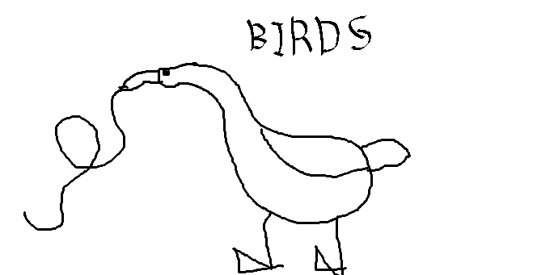
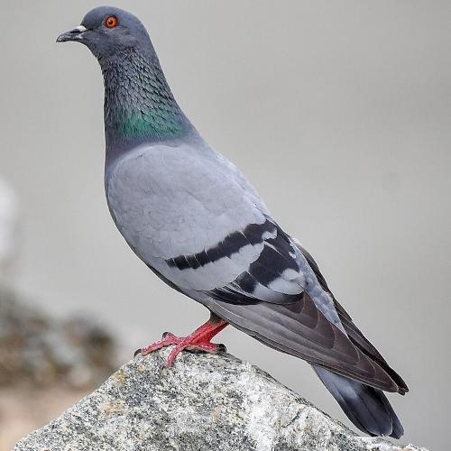

Ornifacts is your one stop shop for all things bird fact related. Here, we offer you only the best facts about the best birds. What is the best birds? That is for us to know and for you to figure out!
We also offer consulting for your bird needs. Have a question about a bird or something? We have the answer! And if we don't? Then we still have the answer, because we're that good! Don't believe us? Try for yourself!
Bird of the Day!

bird to be chosen by javascript. if not, then oops
about this bird, this is placeholder, placeholder will be placeheld
Birdfact!
Birds are interesting, and they have so many facts you wouldn't really think about. Here are some interesting facts you didn't know about birds!
this is
also a
javascript problem
Pigeon

A Rock Dove (Columba livia), the Common Pigeon
Pigeons are found everywhere in urban areas. They have been called "rats with wings" among other things. Indeed, pigeons are an urban niusence. However, pigeons are also very much interesting creatures nonetheless.
They have been called dirty and disease ridden, and that is not untrue, but given the chance, pigeons can be very hygenic (at least moreso than their wild appearance would convey). This is partly because pigeons are a partially domesticated animal. Indeed, pigeons have been useful to humans for thousands of years, being used for communication and in some cases for meat.
In WWI, messenger pigeons were used by all sides. One such pigeon, Cher Ami, carried a message sent by stranded US Army soldiers stuck behind German lines that read "We are along the road parallel to 276.4. Our own artillery is dropping a barrage directly on us. For heaven's sake, stop it" which allowed them to retreat safely. Cher Ami was awarded the French Croix de Guerre for his service, and his taxedermy is on display at the Smithsonian